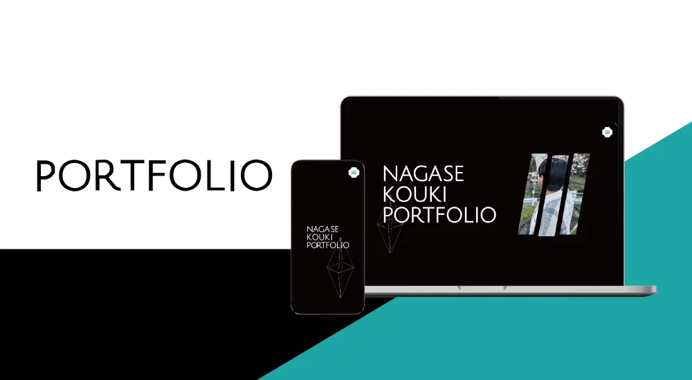

| 作品名 | NAGASE KOUKI PORTFOLIO |
| ジャンル | Webサイト制作 |
| 制作期間 | 約4ヶ月 2023年3月〜 |
| 制作人数 | 1人 |
| 使用技術、ツール | HTML / CSS / JavaScript / Sass / Jquery WordPress / Figma / Illustrator / Photoshop / VisualStudioCode |
| URL | https://koki.main.jp/portfolio/ |
概要
就職活動に使うポートフォリオを作りました。 3月、4月に一度ポートフォリオは完成したのですが納得がいかず、このポートフォリオは2個目のポートフォリオになります。
Point1 GSAP
自分が持っている技術を使い、何ができるのかを表したかったので、アニメーションはGSAPという技術を使いました。ホバーやスクロールで自分なりにかっこいいと思う動きを取り入れました。
Point2 ABOUT
アバウトページでは自分のことをよく知ってもらうために、pcページではボタンをクリックするとクリックしたボタンに対することを左側に表示しました。ここをみることである程度私のことを分かるように詳細を簡潔に書きました。クリックするというアクションをいれることで見ている人に飽きさせないようにしたいと思いました。スマホでのクリックの表示も考えたのですがどうしてもわかりにくくなったので経緯だけを見れるようにしました。GitHubに飛べるリンクも張ってコードを見てもらえるようにもしました。
作品制作を通して
自分を表現することが意外と難しかったなと思います。